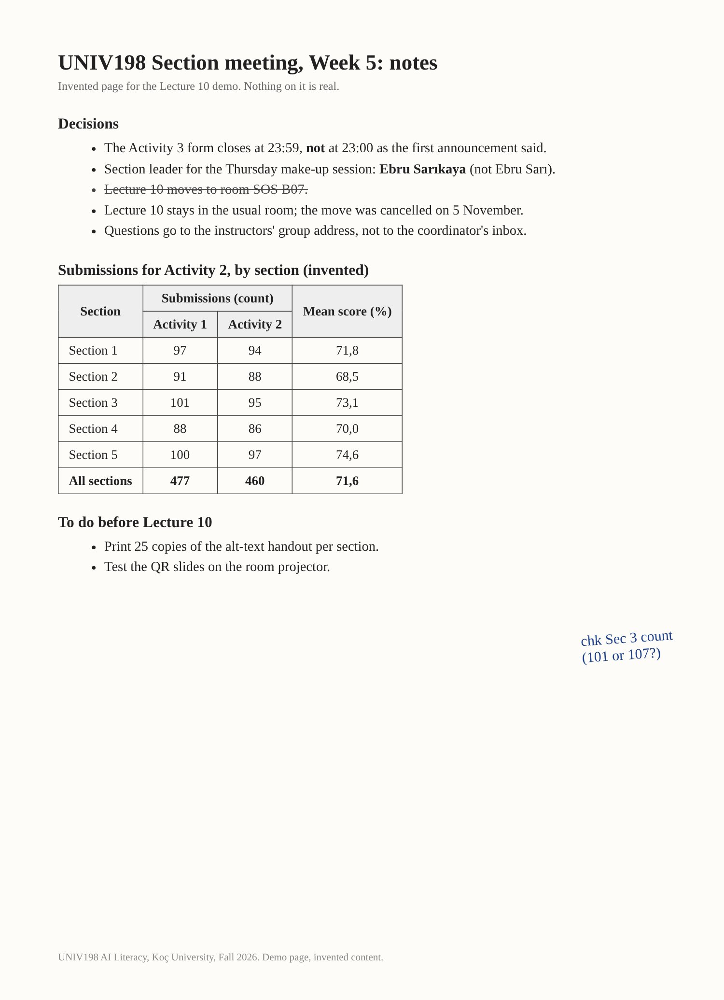

From Pixels to Text: What “Reading” a Page Means
A photographed page is cut into patches; the model predicts the likeliest characters given the patches and the words around them. Not recognition: prediction. Click a stage.
Click a stage above.
Substitutions
1 for l, 0 for O, 5 for S, a wrong digit in a long number, a negated sentence un-negated. Found by reading numbers and names against the original.
Silent repairs
A fluent sentence where the page had a crossed-out one; a complete row where the page had a gap. Found by asking: “mark every place where you were unsure or filled something in”.
Tables, Charts and Screenshots: Where It Goes Wrong
| You give it | What usually goes wrong | The two-minute check |
|---|---|---|
| A photographed table | A column shifted by one row; a merged header split; units dropped; a total recomputed instead of copied | Pick three cells, including the last row and a long number, and compare with the page |
| A chart with no labels | Precise values that were estimated; the wrong axis for a second series; months in the wrong order | Ask for READ or ESTIMATED per value (Lecture 9); check one against the source data |
| A screenshot of a timetable | Days and columns transposed; a cancelled entry included; a note under the table ignored | Ask it to quote the note; check one day end to end |
| A scanned form | Boxes read as text; ticks missed; handwriting in the margin dropped | Ask it to list every tick box and its state |
| A PDF of a paper | The abstract summarised, the method skipped; references invented when the page is cut | Ask for the page number of each claim; check two |
Demo: A Photographed Page, and the Three Ns
Everything for the live demo is on this slide. Photograph the page below with the phone (or press Open the page and upload the file directly), then paste the three turns in order. If the app is slow, open the sample answer under each turn.


Invented. Built to have: a merged header, decimal commas, a crossed-out line, a negation, a name, a handwritten note.
Recordings: find the three Ns
Six lines from an invented meeting. On the left, what was said; on the right, what a transcription tool produced. Three right-hand lines are wrong, one for each N: a name, a number, a negation. The other three differ only harmlessly. Click the lines you think are wrong, then press Check.
Activity 1: Photo to Table
Photograph the table below (or the slide) with your phone, upload it to either app, and ask for it as a typed table with a column marking each cell READ or UNSURE. Type what it gave you for the two shaded cells and press Check; then submit on the Google Form.
| Section (invented) | Enrolled | Submitted | Late | Mean (%) |
|---|---|---|---|---|
| Section 1 | 103 | 97 | 4 | 71.8 |
| Section 2 | 98 | 91 | 11 | 68.5 |
| Section 3 | 101 | 95 | 6 | 73.1 |
| Section 4 | 99 | 88 | 9 | 70.0 |
| Section 5 | 104 | 100 | 3 | 74.6 |
| All | 505 | 471 | 33 | 71.6 |
Shaded: the two cells to report. The “All” row is a trap: a model that recomputes the mean gives 71.7; the page says 71.6.
Section 2, Late
Section 4, Mean (%)
All, Mean (%) (the trap)
Long Files: The Window, Again
A file is tokens in the window
A 40-page PDF is a few tens of thousands of tokens; an hour of audio, about the same as its transcript. It fits. It is also now most of the context.
The middle fades
Lecture 7's “lost in the middle” holds for files: claims from page 20 are used less reliably than page 1 or page 40. Ask for page numbers; check the middle.
Week 7 starts here
When the files are too many to paste, the app retrieves the relevant parts and puts only those in the window. That is retrieval, next week's topic.
What the room usually finds (Activity 1)
The cells are right
A clean photo of a printed table is read correctly almost every time. The value is not the problem.
The marking is not
Asked to mark READ or UNSURE, most answers mark everything READ, including a cell that was out of focus. The admission has to be asked for twice.
The total is recomputed
Some answers give 71.7, the average of the five means, not the 71.6 on the page. Neither is wrong; only one is what the page says.
Takeaways
Reading is prediction
Substitutions and silent repairs. Ask it to mark what it filled in; check numbers and names against the page.
Three cells, three Ns, two page numbers
The two-minute check for a table, a transcript and a PDF. Against the original, never against the answer.
Copied or computed?
A total that is recomputed is not what the page says. Ask which it did.
Files are the window
The middle fades; ask for references; keep the file with the answer. Retrieval is next week.
Next companion page: UNIV198_AI-Literacy_Fall-2026_W06-L10_CompanionPages_02_prompting-and-responsibility.html (the five parts with a file, the four patterns, alt text, uploads and disclosure, the take-home).